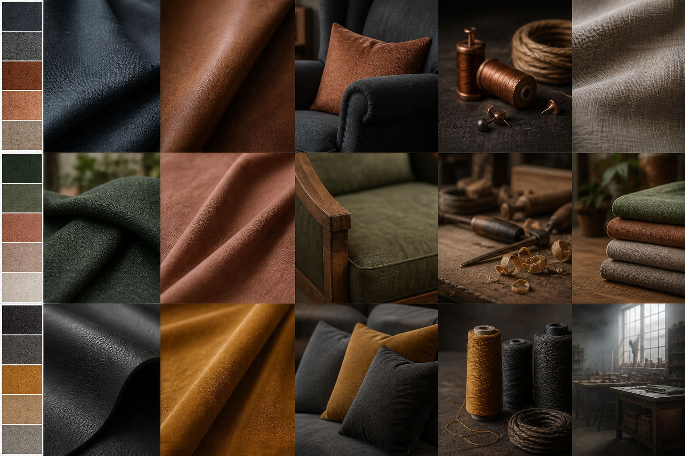
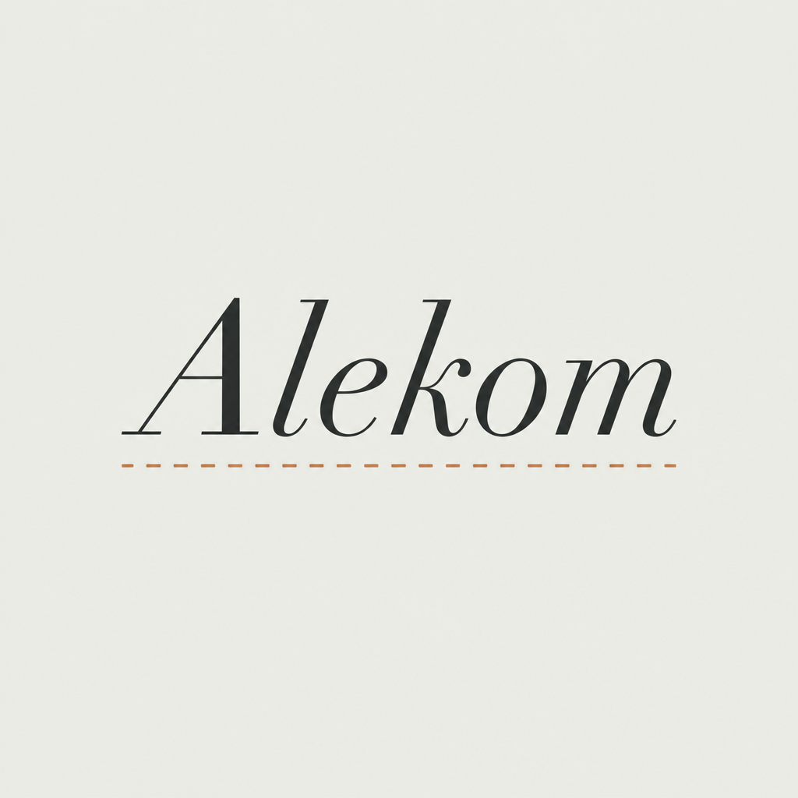
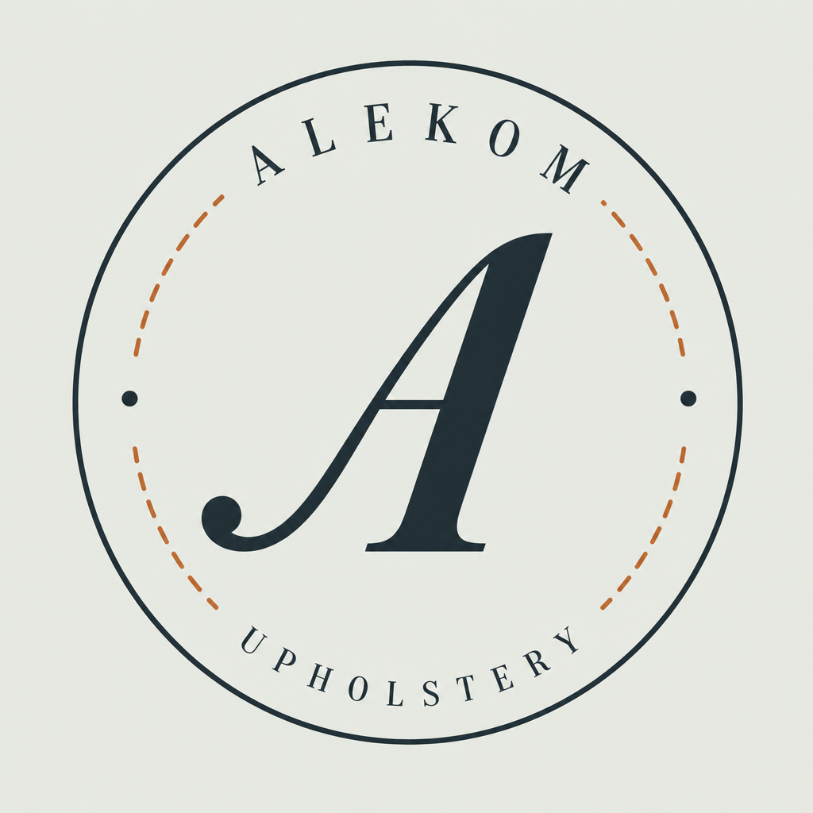
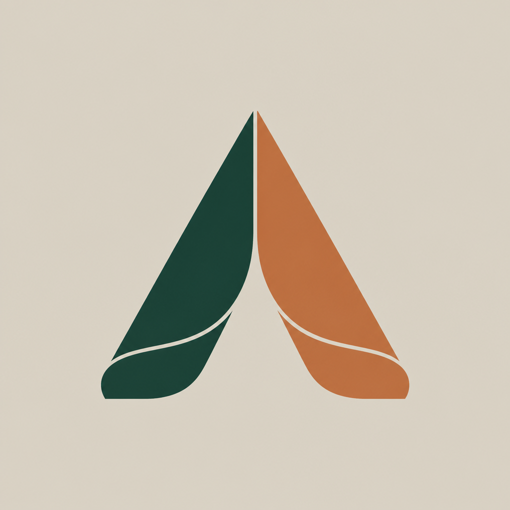
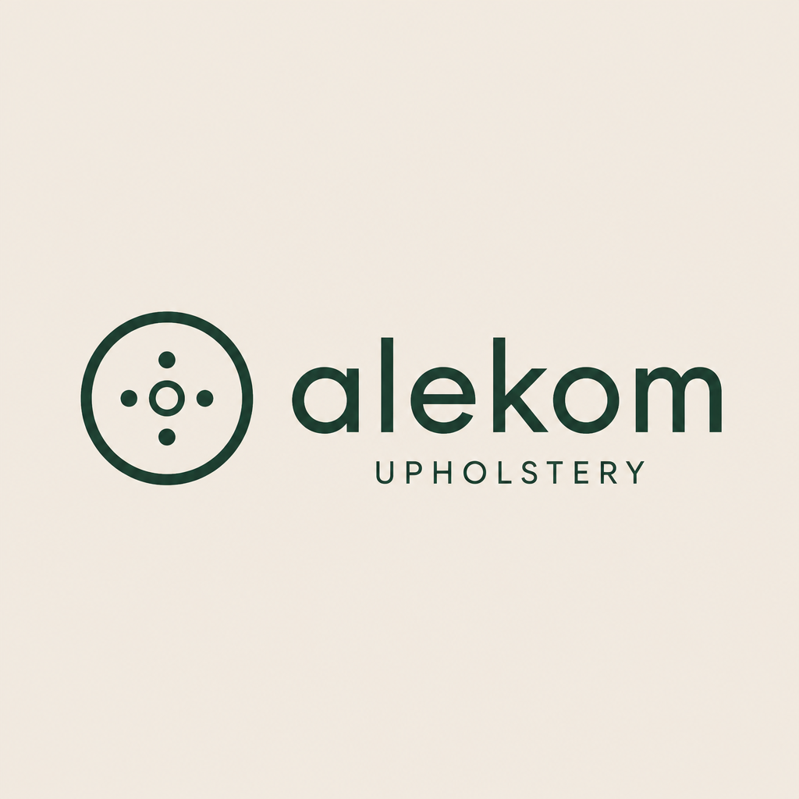
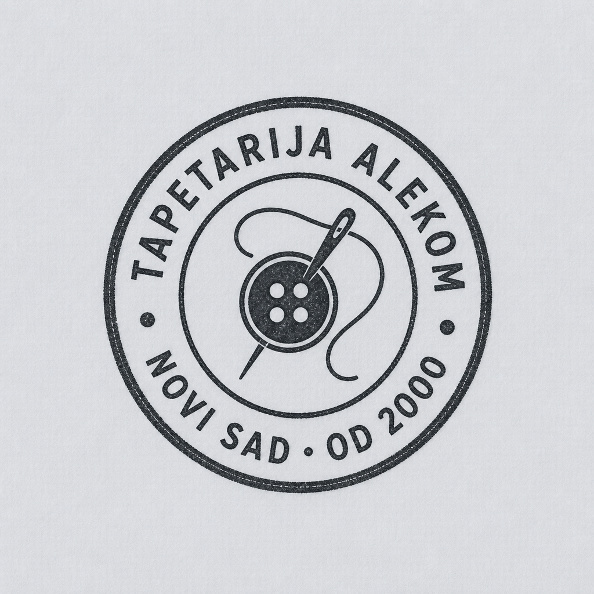

Predlog · vizuelni identitet · za odluku klijenta
Tapetarija Alekom
Tri pravca za boje, tipografiju i logo — da vlasnik što ranije izabere smer,
pa da sajt i digitalni brend idu bez većih izmena. Predlog sledi nalaze digitalnog
audita: problem nije kvalitet zanata, već nevidljivost i odsustvo jasne priče.
Aleksandar Komarov PR · Petrovaradin
Registrovana 01.06.2006.
tapetarijaalekom.rs
@tapetarijaalekom
Šta izveštaj traži od brenda
Ključni zaključak audita: radnja je zanatski jaka, ali digitalno „zamrznuta“
na nivou 2010-ih (stari template alekom.ls.rs bez fotografija). Konkurencija u NS
(Pera Barok, Molnar, Vlasta, Perfekta…) ima lični brend i vidljive preporuke.
Alekom treba portfolio pre/posle, jasan sajt na mobilnom, i dosledno pozicioniranje.
Pravni / kontakt
Zanatska radnja ALEKOM, Aleksandar Komarov PR
Tunislava Paunovića 24, Petrovaradin
021/64 33 621 · 064/24 96 345
Šta rade (APR + ponuda)
Tapaciranje kauča, fotelja, stolica, tabureta · restauracija stilskog nameštaja
i kožne galanterije · sedišta za autobuse, motocikle i automobile · nameštaj za poslovne prostore
Šta nedostaje (audit)
Vizuelni portfolio · jasan lični/brand identitet · sajt koji gradi poverenje ·
aktivne recenzije na Google-u
Cilj ovog dokumenta
Da klijent označi: pozicioniranje + paletu/fontove + logo smer — pre nego što
krenemo u izradu sajta.
Pozicioniranje — prvo ovo
Audit predlaže da se Alekom jasno pozicionira (ne „sve za sve“).
Izaberite jedan glavni stub — drugi ostaje kao sekundarna usluga.
P1 · Stilski / antikni
Majstor za restauraciju i stilski nameštaj — kvalitet šava, tkanina, detalj.
- Poruka: „Vraćamo karakter starom nameštaju.“
- Vizuel: tople materijalne boje, pre/posle stilskih komada
- Publika: domovi, kolekcionari, dizajneri enterijera
Bolje ide uz opcije A ili B ispod.
P2 · Poslovni / ugostiteljstvo
Iskustvo u opremanju objekata i nameštaju za poslovne prostore — brzina + pouzdanost.
- Poruka: „Tapaciranje za objekte koji rade svaki dan.“
- Vizuel: mirniji, „studio“ ton, reference objekata
- Publika: hoteli, kafići, kancelarije, agencije
Bolje ide uz opciju C (Noćni atelje).
Alekom
Ostaje firmni naziv. Čisto, kratko. Manje „ličnog“ od konkurencije.
Alekom · Komarov
Firma + prezime majstora. Audit kaže da konkurencija pobeđuje ličnim brendom.
Tapetarija Alekom
Pun opisni oblik — dobar za Google i Google Business. Preporuka za sajt + GBP.
Atmosfera (mood)
Tri različita osećaja — bakarni šav, šumska radionica, noćni atelje.

Levo → desno: A bakarni · B šumski · C noćni. Klijent bira jedan; detalji se fino podešavaju posle.
Tri opcije boja + fontova
Izaberite A, B ili C. Logo koncepti ispod mogu se kombinovati sa bilo kojom paletom.
Opcija A · preporuka
Bakarni šav
Već je na coming-soon stranici (tapetarijaalekom.rs). Topla bakarna nit na tamnom škriljcu —
zanatski i miran. Kontinuitet sa onim što Google Business već vodi.
#1E2A32škriljac
#E7EBE6platno
#B86B3Abakar
#141816mastilo
#8FA094sage
Novi život za omiljeni nameštaj
Tapaciranje i restauracija — Aleksandar Komarov, Petrovaradin, od 2006.
Naslovi: Fraunces (italic) · Tekst: Outfit
Zašto A: najmanji rizik — već ste u tom smeru. Dobro za stilski nameštaj
i pre/posle galeriju. Ne liči na generički „krem + terakota“ AI izgled.
Opcija B
Šumska radionica
Dublja zelena + meka glina. Više „prirodni materijali / drvo / platno“.
Dobro ako je stub P1 (stilski / antikni).
#1A3A2Fšuma
#E8E4DBkamen
#C47A4Aglina
#2B241Forah
#7D8F74lišće
Novi život za omiljeni nameštaj
Tapaciranje i restauracija — Aleksandar Komarov, Petrovaradin, od 2006.
Naslovi: Cormorant Garamond · Tekst: Manrope
Zašto B: toplije i „materijalnije“. Jači osećaj radionice i tkanine.
Opcija C
Noćni atelje
Ugljen + magla + oker. Najmoderniji, „studio“ ton — bliži ugostiteljstvu i poslovnim objektima (P2).
#12151Augljen
#E8ECF0magla
#C8922Aoker
#1B2838noćno plavo
#9AA3ADčelik
Novi život za omiljeni nameštaj
Tapaciranje i restauracija — Aleksandar Komarov, Petrovaradin, od 2006.
Naslovi: Newsreader · Tekst: Sora
Zašto C: jači kontrast za Instagram i B2B utisak. Manje „klasična tapetarija“.
Logo koncepti
Pet brzih pravaca. Finalni vektor (SVG) ide posle izbora.
Audit naglašava da konkurencija ima prepoznatljiv znak/ime — zato biramo jednostavan,
pamtljiv mark + wordmark.

1 · Wordmark + šav
Čist tipografski znak. Iskrzana linija = konac. Najčišći za sajt i potpis mejla.

2 · Monogram A
Kružni pečat sa slovom A. Favicon, Instagram profil, etiketa na nameštaju.

3 · Nabor tkanine
Apstraktni znak — dva nabora sugerišu „A“. Manje bukvalan, moderniji.

4 · Dugme + alekom
Tapacirsko dugme + wordmark. Jasna asocijacija na zanat.

5 · Pečat (tradicija)
Pečat sa godinom / mestom. Jak za poverenje — u finalu: „od 2006 · Petrovaradin“.
Preporuka
Sajt + potpis: wordmark (1 ili 4).
Profil / favicon: monogram ili pečat (2 ili 5).
Često se koriste oba.
Šta sajt mora da ima (iz audita)
Audit: zameniti stari ls.rs template jednostranačnim sajtom sa portfoliom,
cenovnim rasponom i formularom — mora raditi na mobilnom. Fotografije su ključ.
- Hero — „Tapetarija Alekom“ kao glavni signal, jedna rečenica pozicioniranja, CTA poziv / upit, jedna dominantna fotografija rada (full-bleed).
- Usluge — kauč/fotelja/stolica · stilski / koža · auto/moto/autobus · poslovni prostori (prema izabranom stubu P1/P2).
- Pre i posle — ključna sekcija. Audit traži 20–30 slika; na sajtu start sa 6–12 jakih parova.
- Galerija / reference — gotovi radovi, eventualno objekti.
- O majstoru — Aleksandar Komarov, od 2006., Petrovaradin. Lična priča (audit: konkurencija pobeđuje ličnim brendom).
- Orijentacione cene — raspon („od …“), ne obavezan pun cenovnik — audit eksplicitno traži cenovni raspon.
- Kontakt — telefoni, adresa, mapa, Instagram/FB, kratka forma za upit.
Pre
Istrošena presvlaka — isti ugao, dnevno svetlo (telefon OK)
Posle
Isti komad posle tapaciranja — ovo je glavni argument prodaje
Paralelno sa sajtom (iz audita): Google Business popunjen + 10–15 recenzija od starih klijenata + redovne objave pre/posle na IG/FB.
Predlog pravca, ne finalni dizajn sajta. Finalni logo u vektoru posle izbora.
Coming-soon trenutno koristi pravac blizak opciji A. Godina u pečatu: 2006 (APR), ne 2000.
Izvor konteksta: digitalni audit „Tapetarija Alekom — zašto nema novih klijenata“.
Kontakt: Tunislava Paunovića 24, Petrovaradin · 021 64 33 621 · 064 24 96 345